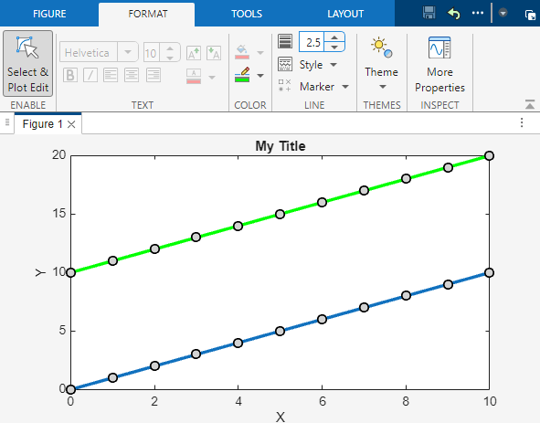
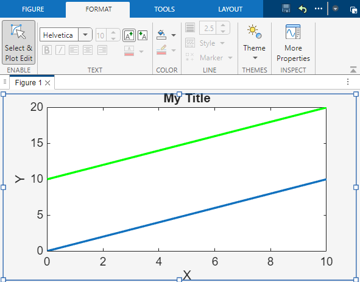
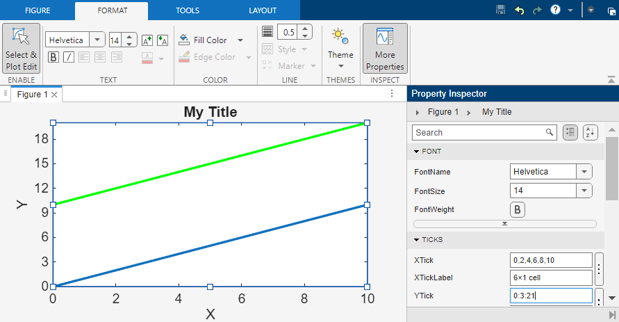
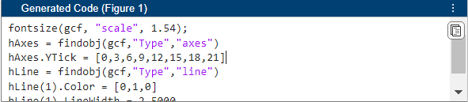
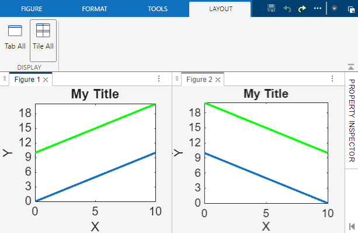

Interactively Customize Plot Appearance
These examples show how to interactively modify the properties of one or more graphics objects in a figure. These examples also show how to generate code to reproduce your formatting changes.
Customize Format
To customize the format of a plot or an object in the plot, enable plot edit mode. To enable plot edit mode, on the Format tab of the figure, in the Enable section, click Select & Plot Edit. Then, you can click within the figure to select an object to modify.
Modify Format of Line
You can modify the format of a single object in a figure. Select the object, and then interactively modify the object properties using the Format tab.
For example, plot two lines using plot(0:10,[0:10; 10:20]).
To change the color of one line, select the line in the figure. Then, in the
Color section of the Format tab,
select a line color.

Modify Format of Multiple Lines
You can modify the format of multiple objects in a figure. Select the first object. Next, hold Shift and select additional objects. Then, interactively modify any properties that the selected objects have in common using the Format tab.
For example, increase the line width of two lines. Select one line in the figure, hold Shift, and select the second line. Then, in the Line section of the Format tab, adjust the line width value.

Modify Format of Entire Figure
You can modify figure properties or any properties that all objects in the figure have in common. Select the entire figure by clicking outside of the axes. Then, interactively set properties using the Format tab.
For example, increase the font scale for all text in the figure. Select the figure by clicking outside of the axes. Then, in the Text section of the Format tab, increase the font scale. This change increases the size of the title, axis labels, and tick labels.

Modify Additional Properties Using Property Inspector
The Format tab of the figure controls only a subset of properties. You can interactively modify additional properties for any object in the figure using the Property Inspector. To open the Property Inspector, on the Format tab, after clicking Select & Plot Edit in the Enable section, in the Inspect section, click More Properties.
For example, modify the y-axis tick values. Select
the axes in the figure and enter a new value for the YTick
property using the Property Inspector.

Reproduce Style Using Generated Code
You can generate code to reproduce the changes to the figure that you made interactively using the Format tab. To display the generated code, select the Show Code check box on the Figure tab. Then, in the Generated Code panel, click the Copy all code button. If you add labels and annotations using the Figure tab, the generated code is applicable to a wide variety of charts. However, if you make formatting changes using the Format tab, the code is most applicable to charts that are the same or very similar to the original.
For example, generate code that represents your formatting changes for the line plot.

Then, create a similar plot. To apply your formatting changes from the original figure, paste and run the generated code in the Command Window or in a script.
Alternatively, you can generate a function to reproduce the entire figure, including the original code and any interactive changes. The function file does not store the plotted data, so you must supply data arguments. To generate a function, on the Tools tab of the figure, in the Export section, select Generate Function.
Display Multiple Figures in Tiled View
To arrange two figures side-by-side, undock the figures in the same window and
select Tile All on the Layout tab of the
figure window. To access additional layout options, such as arranging tiles and
alphabetizing tabs, click the Document actions button  at the top right of the figure.
at the top right of the figure.
